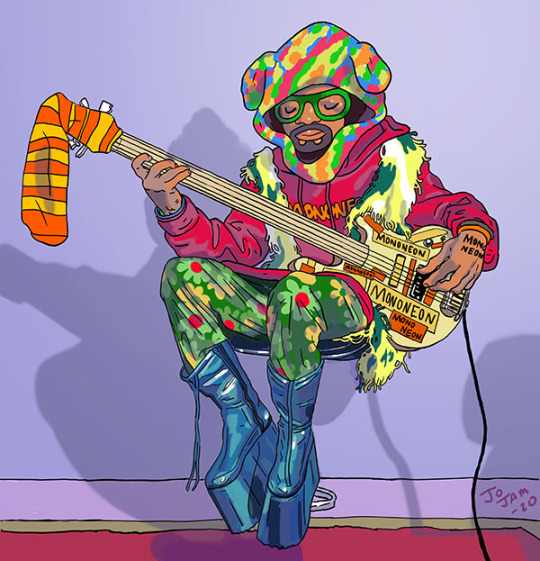

CURIOSIDADE DO CONTRABAIXO
Instrumento de cordas o contrabaixo, iniciou na idade média da família do violino e do violoncelo, tocado com um arco, sua característica é o tamanho do instrumento “Grande – Rabecão” e de som encorpado do grave, muito utilizado em orquestra e pizzicato, tocado com os dedos nos variados estilos musicais como Blues, Jazz, “Walking Bass” e música acústico.
LER MAIS